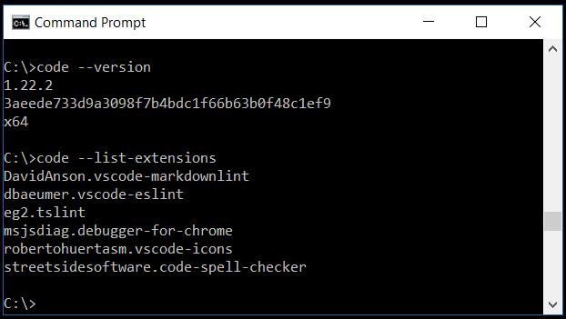
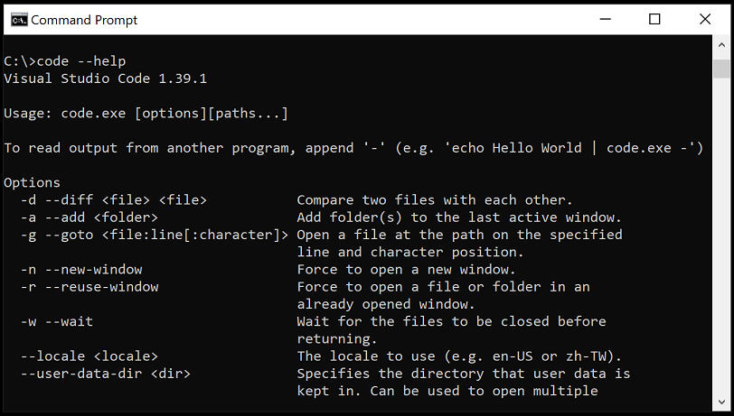
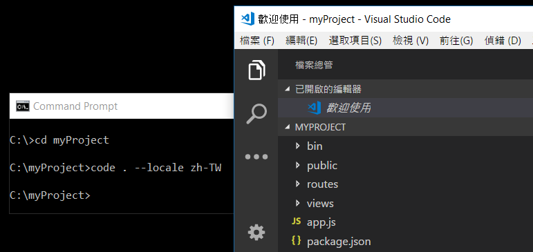
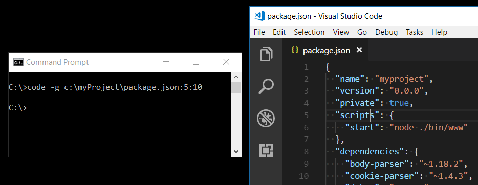
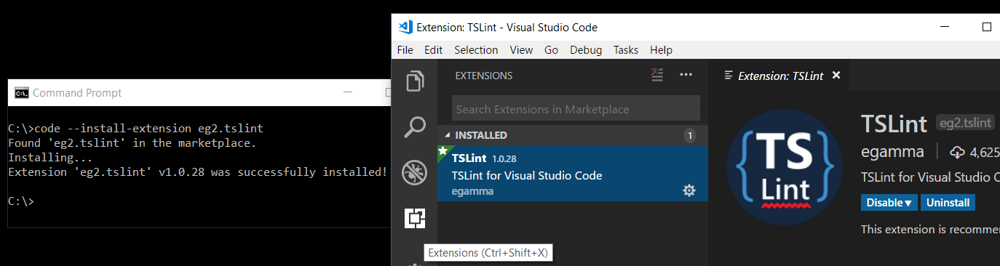
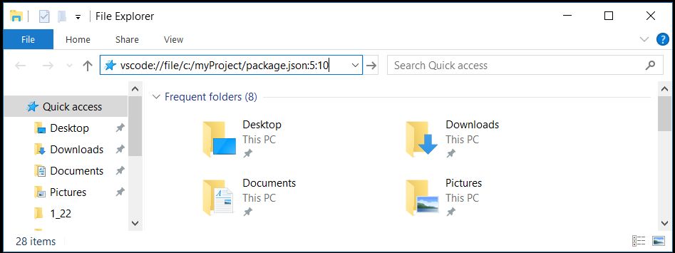

Command Line Interface (CLI)
Visual Studio Code has a powerful command line interface built-in that lets you control how you launch the editor. You can open files, install extensions, change the display language, and output diagnostics through command-line options (switches).

If you are looking for how to run command-line tools inside VS Code, see the Integrated Terminal.
Command line help
To get an overview of the VS Code command line interface, open a terminal or command prompt and type code --help. You will see the version, usage example, and list of command line options.

Launching from command line
You can launch VS Code from the command line to quickly open a file, folder, or project. Typically, you open VS Code within the context of a folder. To do this, from an open terminal or command prompt, navigate to your project folder and type code .:

Note: Users on macOS must first run a command (Shell Command: Install 'code' command in PATH) to add VS Code executable to the PATH environment variable. Read the macOS setup guide for help.
Windows and Linux installations should add the VS Code binaries location to your system path. If this isn't the case, you can manually add the location to the Path environment variable ($PATH on Linux). For example, on Windows, VS Code is installed under AppData\Local\Programs\Microsoft VS Code\bin. To review platform specific setup instructions, see Setup.
Insiders: If you are using the VS Code Insiders preview, you launch your Insiders build with
code-insiders.
Core CLI options
Here are optional arguments you can use when starting VS Code at the command line via code:
| Argument | Description |
|---|---|
-h or --help |
Print usage |
-v or --version |
Print VS Code version (for example, 1.22.2), GitHub commit id, and architecture (for example, x64). |
-n or --new-window |
Opens a new session of VS Code instead of restoring the previous session (default). |
-r or --reuse-window |
Forces opening a file or folder in the last active window. |
-g or --goto |
When used with file:line[:character], opens a file at a specific line and optional character position. This argument is provided since some operating systems permit : in a file name. |
-d or --diff |
Open a file difference editor. Requires two file paths as arguments. |
-w or --wait |
Wait for the files to be closed before returning. |
--locale <locale> |
Set the display language (locale) for the VS Code session. (for example, en-US or zh-TW) |

Opening Files and Folders
Sometimes you will want to open or create a file. If the specified file does not exist, VS Code will create them for you along with any new intermediate folders:
code index.html style.css documentation\readme.md
For both files and folders, you can use absolute or relative paths. Relative paths are relative to the current directory of the command prompt where you run code.
If you specify more than one file at the command line, VS Code will open only a single instance.
If you specify more than one folder at the command line, VS Code will create a Multi-root Workspace including each folder.
| Argument | Description |
|---|---|
file |
Name of a file to open. If the file doesn't exist, it will be created and marked as edited. You can specify multiple files by separating each file name with a space. |
file:line[:character] |
Used with the -g argument. Name of a file to open at the specified line and optional character position. You can specify multiple files in this manner, but you must use the -g argument (once) before using the file:line[:character] specifier. |
folder |
Name of a folder to open. You can specify multiple folders and a new Multi-root Workspace is created. |

Working with extensions
You can install and manage VS Code extensions from the command line.
| Argument | Description |
|---|---|
--install-extension <ext> |
Install an extension. Provide the full extension name publisher.extension as an argument. Use --force argument to avoid prompts. |
--uninstall-extension <ext> |
Uninstall an extension. Provide the full extension name publisher.extension as an argument. |
--disable-extensions |
Disable all installed extensions. Extensions will still be visible in the Disabled section of the Extensions view but they will never be activated. |
--list-extensions |
List the installed extensions. |
--show-versions |
Show versions of installed extensions, when using --list-extensions |
--enable-proposed-api <ext> |
Enables proposed api features for an extension. Provide the full extension name publisher.extension as an argument. |

Advanced CLI options
There are several CLI options that help with reproducing errors and advanced setup.
| Argument | Description |
|---|---|
--extensions-dir <dir> |
Set the root path for extensions. Has no effect in Portable Mode. |
--user-data-dir <dir> |
Specifies the directory that user data is kept in, useful when running as root. Has no effect in Portable Mode. |
-s, --status |
Print process usage and diagnostics information. |
-p, --performance |
Start with the Developer: Startup Performance command enabled. |
--disable-gpu |
Disable GPU hardware acceleration. |
--verbose |
Print verbose output (implies --wait). |
--prof-startup |
Run CPU profiler during startup. |
--upload-logs |
Uploads logs from current session to a secure endpoint. |
--add <dir> |
Add folder(s) to the last active window for a multi-root workspace. |
Opening VS Code with URLs
You can also open projects and files using the platform's URL handling mechanism. Use the following URL formats to:
Open a project
vscode://file/{full path to project}/
vscode://file/c:/myProject/
Open a file
vscode://file/{full path to file}
vscode://file/c:/myProject/package.json
Open a file to line and column
vscode://file/{full path to file}:line:column
vscode://file/c:/myProject/package.json:5:10
You can use the URL in applications such as browsers or file explorers that can parse and redirect the URL. For example, on Windows, you could pass a vscode:// URL directly to the Windows Explorer or to the command line as start vscode://{full path to file}.

Note: If you are using VS Code Insiders builds, the URL prefix is
vscode-insiders://.
Next steps
Read on to find out about:
- Integrated Terminal - Run command-line tools from inside VS Code.
- Basic Editing - Learn the basics of the VS Code editor.
- Code Navigation - VS Code lets you quickly understand and move through your source code.
Common questions
'code' is not recognized as an internal or external command
Your OS cannot find the VS Code binary code on its path. The VS Code Windows and Linux installations should have installed VS Code on your path. Try uninstalling and reinstalling VS Code. If code is still not found, consult the platform specific setup topics for Windows and Linux.
On macOS, you need to manually run the Shell Command: Install 'code' command in PATH command (available through the Command Palette kb(workbench.action.showCommands)). Consult the macOS specific setup topic for details.
How do I get access to a command line (terminal) from within VS Code?
VS Code has an Integrated Terminal where you can run command-line tools from within VS Code.
Can I specify the settings location for VS Code in order to have a portable version?
Not directly through the command line, but VS Code has a Portable Mode which lets you keep settings and data in the same location as your installation, for example, on a USB drive.